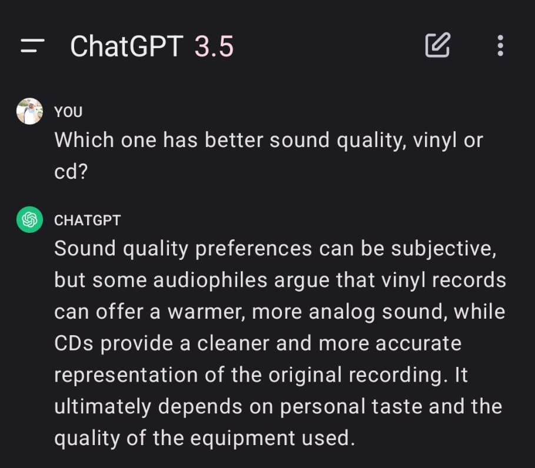
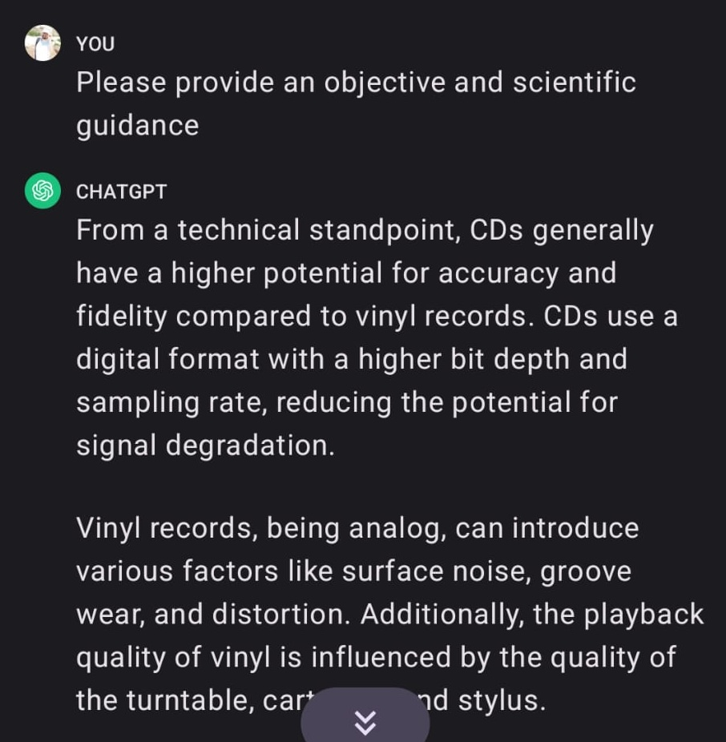
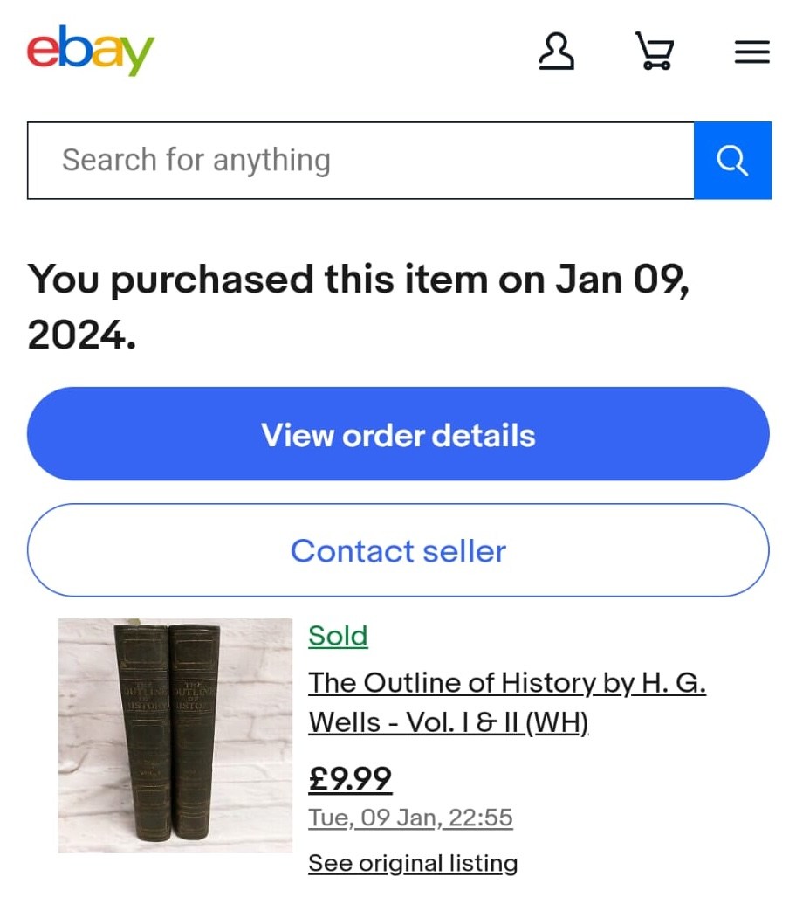
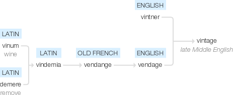

Typography, Ink and Paper
A Case for Old Books 📜
Tayfun Sen
Reading and Literacy
It's amazing how society decided to teach kids reading as the first intellectual skill 📖✨
What I want to expose here is something else, a well kept secret 🤫
Tech makes most stuff better 👾
(sorry Arav, and the rest of the vinyl gang! 🎶)

🫠

Tapes, vinyl etc. are hard to use!
I don't even own a cd player 📀
But books are different!
Books are one thing -maybe the only thing- where old is better!
And I'm not even talking about rare books or collectibles
How many of you know the author H. G. Wells?
Invisible Man, Time Machine (he coined the term!), War of the Worlds, First Men in the Moon...
How many of you know he wrote a history book?
"Outline of History" sold 2 million copies.
You don't need to buy expensive copies for investment.

What makes a good book/magazine?
- Content - engaging stories
- Print quality - paper weight, typesetting, ink quality and binding
New books - properties
-
Thin paper not durable
-
Acidic paper has slow burn
-
Glue binding - pages falling off
-
And content up for grabs!
New books - reasons
-
Modern manufacturing
-
Tiktok/instagram era - attention grabbing
Old books
-
Stitched binding
-
Leather covers
-
Heavy paper - original typesetting, sometimes hand-painted pictures
-
Content quality - has it stood the ultimate test (test of time)? Classics are a very good option
How do you find old books?
-
your friendly local second-hand bookshop
-
eBay
-
charity shops
-
estate sales
Vintage

lat. harvest of grapes, yield of wine
Thanks for
coming to my TED talk! 🙇